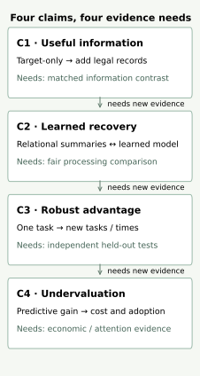
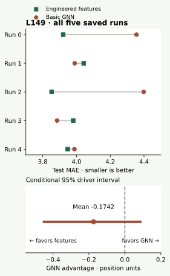
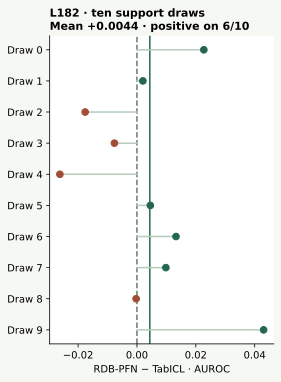

YEAR 5 · LESSON 195 · THESIS STRESS-TEST
What would change your mind?¶
Your tangible win: write the strongest defensible case against the thesis, then state the observation that would change your mind. The goal is a better research question for Year 6.
Lesson 194 separated observations from explanations. This lesson asks what those observations do to the argument itself. It introduces no new model. You will reproduce the complete approved saved-evidence analysis, using visible scoring code.
1 · Recall the honest bar¶
Before reading: does an interval crossing zero prove two models equivalent? Does a source-code failure establish poor test performance? If both pipelines use relational aggregates, does their score difference isolate the value of relational information?
Check your recall
No to all three. Crossing zero leaves the direction unresolved under that interval. A source failure can block a valid experiment without measuring its score. A comparison where both systems use relational information cannot isolate adding that information.
Mission connection. The mission asks whether relational learning unlocks overlooked value. To test that claim, first make it possible to be wrong. A falsifier is an observation that would contradict a specified claim under a valid measurement procedure. It is not simply an inconvenient number.
2 · Split the thesis before attacking it¶
In plain terms. “Relationships matter,” “this model uses them better,” and “the world undervalues it” are different propositions.
The dossier has four subclaims. C1 says flattening can discard useful information. C2 says learning over structure can recover predictive value. C3 requires a fair, robust advantage. C4 claims the opportunity is undervalued. Here, flattening means representing a target entity and its history as one fixed-width row; a relational feature can still summarize records from other tables.


Worked example. A table with customer ID, order count and last-month spend already contains relational information. LightGBM on that table is a tabular predictor with relational features. Comparing it with a graph neural network changes the processing pipeline. It does not compare “relationships” with “no relationships.”
The strongest alternative. Deterministic relational summaries plus a strong tabular predictor may be sufficient for some tasks. RDBLearn v1, §3 makes this an explicit two-stage recipe. That is an objection to the necessity of learned relational encoders, not to using relational records at all.
A feature-map collision proves that particular map loses information. It does not prove that the missing information predicts the target, or that every feasible feature map loses it. Likewise, repeated ties on a few flat datasets do not prove single-table progress is exhausted. Some early dossier language made that stronger leap; this lesson narrows it.
3 · Start with the uncomfortable result¶
The first packet comes from L149: basic GraphSAGE RDL versus engineered relational features plus LightGBM on rel-f1/driver-position. RDL means relational deep learning. The target is future average finishing position. MAE, mean absolute error, averages the absolute distance between prediction and target; smaller is better.
Held fixed: the archived query identities, outcomes and evaluation splits. Compared: two released complete pipelines, including different preprocessing and learning procedures. Each has five saved runs. The GNN ran ten full epochs per seed; the feature baseline ran ten validation trials per seed followed by its selected refit. Every validation and test prediction is retained.
Worked arithmetic. Define candidate advantage as baseline loss minus candidate loss. For these GNN and feature-baseline test means, 3.948917 − 4.123071 = −0.174155 position units. Negative favors the feature baseline. For one illustrative query with truth 4, GNN prediction 6 and baseline prediction 5, the advantage is |4−5| − |4−6| = −1. The illustrative query is not a measured driver row.


Uncertainty has a unit. Several predictions concern the same driver, so independently resampling individual rows would ignore that grouping. We first average each query's loss difference over the five saved runs, then resample whole drivers with replacement. We retain query weighting within each draw. The 2.5th and 97.5th percentiles of 2,000 draws form a conditional descriptive interval: [-0.449621, +0.085850] for GNN advantage.
It crosses zero. This does not demonstrate a reliable GNN advantage, and it does not prove equivalence or a universal feature-engineering victory. The interval holds the fitted models and split fixed. It does not cover new-database uncertainty or dependence between drivers in the same race. The test set has been examined in earlier lessons, so this is exploratory evidence.
Scope check. This is the basic GNN associated with RelBench v1 Table 7, not the boosted GNN used in the paper's regression user-study figure. Historical feature arrival times remain unknown. Replaying stored predictions does not retrain either pipeline.
Try a practical margin¶
A practical margin is the smallest benefit worth the added complexity, expressed in the task's units. It must be chosen before a future confirmatory test. Here you can change a margin retrospectively while the measured interval stays fixed. This exposes how a decision depends on the requirement; it does not validate a convenient threshold.
4 · Keep evidence that pushes the other way¶
The second packet is the complete selected L182 inference evidence, preserved through L190: RDB-PFN, its single-table-prior variant, and TabICL v1.1. There are ten support draws, each with 512 labeled support examples, and all 702 test queries. A support draw chooses labeled examples supplied to a frozen predictor; it is not a new database or new pretraining run.
AUROC measures how often a randomly chosen positive ranks above a negative, giving half credit to tied scores. Larger is better. We preserve the released label orientation and full (entity ID, cutoff) keys. A cutoff is the prediction time associated with an entity; entity ID alone cannot identify repeated queries.


RDB-PFN minus TabICL averages +0.004369 AUROC, with positive differences on 6/10 support draws. The ten dots describe support sensitivity on this one task; they are not ten independent replications. RDB-PFN v5, §6 and Table 9 provide the published context. This selected replay cannot establish the paper's broader task claims.
Steelman the skeptic. A strong tabular FM using relational summaries is a serious comparator; the selected gain is not uniformly positive across support draws. Steelman the reply. The relational-prior model still has a positive mean here, and its single-table-prior variant is weaker. That leaves a useful research hypothesis. Comparing these saved systems does not identify architecture or pretraining prior as the sole cause.
5 · An unrun experiment is not a loss¶
L194 retains all 21 RDBLearn tasks and the full planned search: 567 validation candidates and 63 selected tests. All fresh scores remain absent because the source/preprocessing admission gate failed. Published reference values give 17 favorable / 3 unfavorable / 1 equal signs against the fixed AutoGluon+DFS comparator. Those are descriptive paper-table signs, not new predictions or significance results.
The recorded category-code failure is evidence about representation consistency. Its benchmark frequency and score impact remain unmeasured. The remaining data, availability, checkpoint, regression-normalization and executor gaps also remain. The strongest criticism is currently reproducibility and readiness, not measured predictive inferiority.
Non-independent data and open environments. Rows may share an entity, event or time period. Converting them to one table does not make them independent. New time periods, unseen entities, changed feature schemas or new label classes can challenge a method beyond its original evaluation contract. L069 and its primary reading give concrete open-environment cases. These are reasons to design new tests; their results are not numerically replayed in this lesson.
6 · Write a falsification brief that could change a decision¶
Use four short parts: claim → strongest objection → what survives → decisive next observation. Avoid a vague verdict such as “the thesis is wrong.” Specify the scope you are revising.
Worked reference position. “The evidence does not establish that learned relational encoders are necessary for strong relational prediction. Engineered relational features are competitive in the selected F1 comparison, whose conditional interval leaves the direction unresolved. A positive RDB-PFN contrast keeps relational priors interesting. I would test matched information access on new tasks, with a practical margin and a group-aware uncertainty procedure declared before test access.”
For C4, even a robust predictive win would leave undervaluation open. That claim needs a specified comparison of total cost, downstream utility and adoption or investment. A leaderboard score contains none of those measurements.
| Subclaim | Current defensible position | Missing decisive evidence |
|---|---|---|
| C1: useful structure can be lost | Possible; not inevitable for every task/map | Matched information intervention |
| C2: learned recovery helps | Task-dependent hypothesis; strong FE comparator | Matched pipeline and prior/architecture controls |
| C3: fair robust gain | Scoped results; broad advantage unestablished | New databases, time shifts, full uncertainty |
| C4: undervalued opportunity | Not measured by these scores | Cost, utility and adoption evidence |
Future study, NOT_RUN. Freeze target-only, legal relational-summary and learned-relational conditions on an untouched task set. Match information availability and validation search, disclose training/inference costs, and declare the minimally useful gain. A result that fails the practical-gain requirement would narrow a practical-superiority claim. Missing runs stay incomplete. This study needs its own feasible protocol and budget before execution.
7 · Implement, inspect, defend¶
The student notebook is an offline NumPy lab. It embeds the complete evidence packet and readable scoring implementation. Your three TODOs align query errors, interpret interval geometry, and limit claims; the full replay calls your functions. CHECK cells give immediate feedback. Keep the written defense separate from automatic checks.
Read-only executed notebook · Reference sheet · Complete author falsification brief · Reproduction contract · Independent verification.
Exit ticket: challenge one of C1–C4 using exact evidence, defend the strongest reply, and specify what would reverse your position. Name what varies, what stays fixed, the metric and units, the uncertainty unit, practical margin, and invalidation conditions. Ask the teacher to challenge your reasoning or explain any unclear step. Successful author replay leaves your status PENDING_WRITTEN_DEFENSE.
Next: Lesson 196 turns an unresolved technical question into a precise community draft. Lesson 197 then connects your narrowed claim to the wider model landscape, before Lesson 198 develops three proposals. No community message is sent by this lesson.